Media
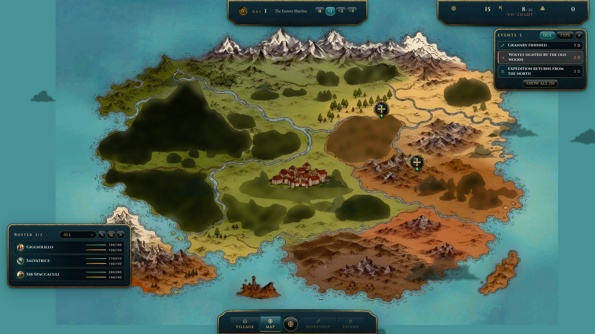
About This Game
Heroes aren't born. They survive.
Exiled to a monster-haunted island, you send small parties into the wild to take the jobs nobody else will. Every quest has a price: some come back richer, some come back wounded, some don't come back at all. The ones who survive become heroes.
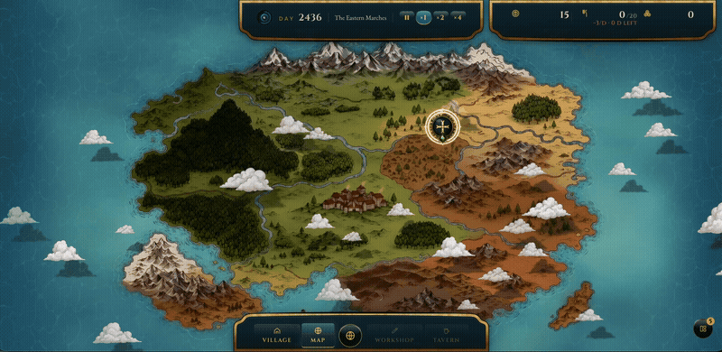
Placeholder: la GIF definitiva gif-1-quest-offer.gif va prodotta (<5 MB, 616 px).
Pick the quests worth the risk
Quests appear on the map, each showing its danger, its reward and how long it stays open. The best ones need more than you have: take smaller jobs to earn the gear, skills and blueprints they demand, then climb one step higher. Wait too long and the offer is gone.
Read the odds. Let the Astrolabe decide.
Before a party leaves, you see a forecast for exactly those people: who might get hurt, who might not come back, and why. Choose the skill that leads, spend items to tilt the odds, put a bodyguard in front of your best hero. Then the Astrolabe spins: five outcomes, from triumph to disaster.
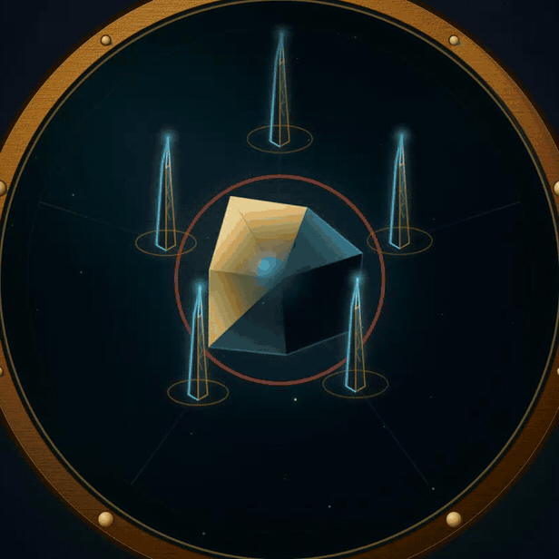
Heroes built from what you find
Heroes start as blank slates and grow into whatever the skills, spells and gear you find make of them. Recruits who survive long enough face the Trial of Fire and can join their ranks. Lose a hero, and everything they carried is gone with them.
GIF da produrre: gif-3-party.gif (<5 MB, 616 px)
Between expeditions
Your settlement feeds your people, forges their gear and unlocks new spells and equipment. Decide what to build next and who stays behind to work: everyone at home is someone you can't send out.
Fall. Learn. Come back stronger.
Waves of attackers strike the island in cycles. When your settlement falls, the run ends, but your blueprints and building bonuses carry over. Each run you get further, and find the missing piece of your strategy.
Where it's heading
Wanderlust: Triumph is a one-person project, made out of passion for this kind of game. Here is where it's going:
- From a single party to several teams, and in the end an elite company for heroic quests
- Bosses leading the waves: defeat them and the world moves into its next phase
- A campaign across many runs, with authored stories and consequences that persist
- A free demo for Steam Next Fest, then Early Access
- English and Italian first, then Spanish, German and Chinese
Wishlist and follow to play the demo, and tell us in the discussions what you want to see first.
Gli eroi non nascono. Sopravvivono.
Esiliato su un'isola infestata dai mostri, mandi piccoli party nelle terre selvagge ad accettare i lavori che nessun altro vuole. Ogni quest ha un prezzo: c'è chi torna più ricco, chi torna ferito, chi non torna affatto. Chi sopravvive diventa un eroe.
Placeholder: la GIF definitiva gif-1-quest-offer.gif va prodotta (<5 MB, 616 px).
Scegli le quest che valgono il rischio
Le quest compaiono sulla mappa, ognuna con il suo pericolo, la sua ricompensa e quanto resta aperta. Le migliori chiedono più di quanto hai: accetta lavori minori per guadagnare l'equipaggiamento, le skill e i progetti che servono, poi sali di un gradino. Se aspetti troppo, l'offerta sparisce.
Leggi le probabilità. Lascia decidere all'Astrolabio.
Prima che un party parta, vedi la previsione per esattamente quelle persone: chi rischia di ferirsi, chi potrebbe non tornare, e perché. Scegli la skill che guida, spendi oggetti per spostare le probabilità, metti una guardia del corpo davanti al tuo eroe migliore. Poi l'Astrolabio gira: cinque esiti, dal trionfo al disastro.
Eroi costruiti con ciò che trovi
Gli eroi partono come tele bianche e diventano ciò che ne fanno le skill, gli incantesimi e l'equipaggiamento che trovi. Le reclute che sopravvivono abbastanza a lungo affrontano la Prova del Fuoco e possono unirsi a loro. Se perdi un eroe, perdi tutto quello che portava con sé.
GIF da produrre: gif-3-party.gif (<5 MB, 616 px)
Tra una spedizione e l'altra
Il tuo insediamento sfama la tua gente, forgia il suo equipaggiamento e sblocca nuovi incantesimi e oggetti. Decidi cosa costruire e chi resta a lavorare: chi rimane a casa è qualcuno che non puoi mandare fuori.
Cadi. Impara. Torna più forte.
Ondate di attaccanti colpiscono l'isola a cicli. Quando il tuo insediamento cade, la run finisce, ma i progetti e i bonus degli edifici restano. A ogni run arrivi più lontano, e trovi il pezzo mancante della tua strategia.
Dove sta andando
Wanderlust: Triumph è il progetto di una sola persona, nato dalla passione per questo genere di giochi. Ecco dove sta andando:
- Da un singolo party a più squadre, fino a una compagnia d'élite per le quest eroiche
- Boss alla guida delle ondate: sconfiggili e il mondo entra nella fase successiva
- Una campagna attraverso molte run, con storie scritte e conseguenze che restano
- Una demo gratuita per lo Steam Next Fest, poi l'Early Access
- Prima inglese e italiano, poi spagnolo, tedesco e cinese
Metti in wishlist e segui il gioco per provare la demo, e dicci nelle discussioni cosa vuoi vedere per primo.
System Requirements
Minimum:
[da misurare su build Tauri — WebView2 richiesto]
Store Assets (candidati — key art, misure 2024)
Main Capsule 1232×706
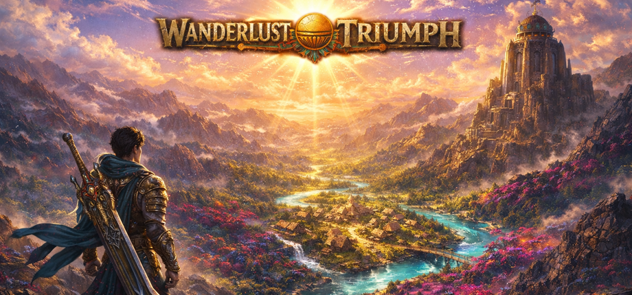
Header Capsule 920×430
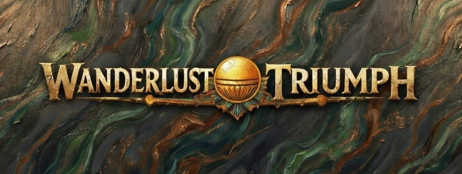
Small Capsule 462×174
a 120×45 (la misura più piccola)
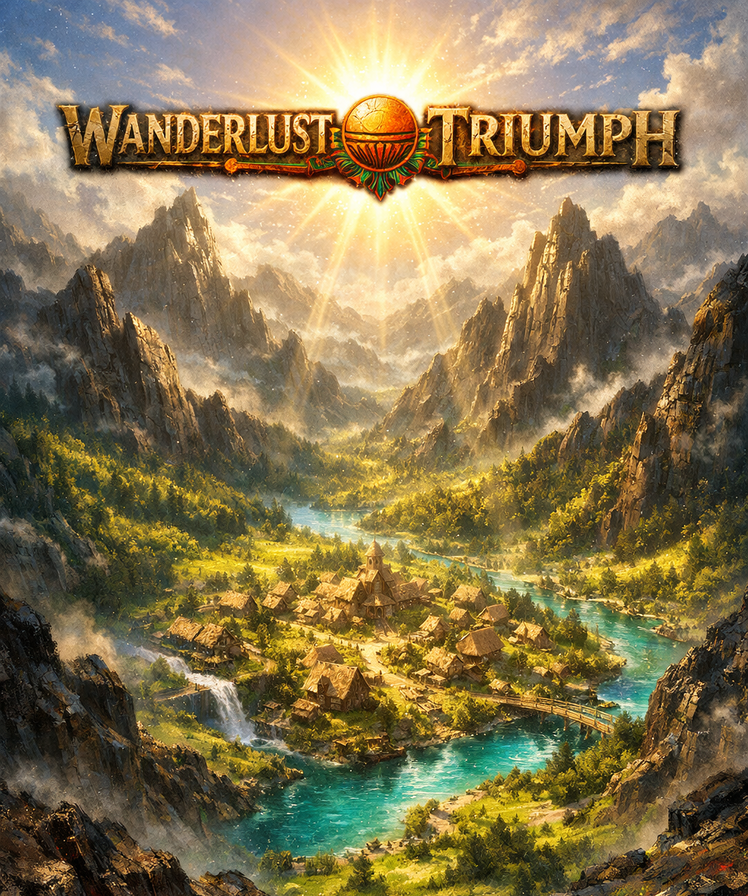
Vertical Capsule 748×896 — da
Library Capsule.png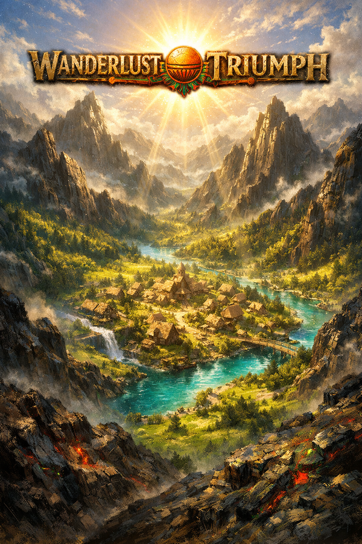
Library Capsule 600×900
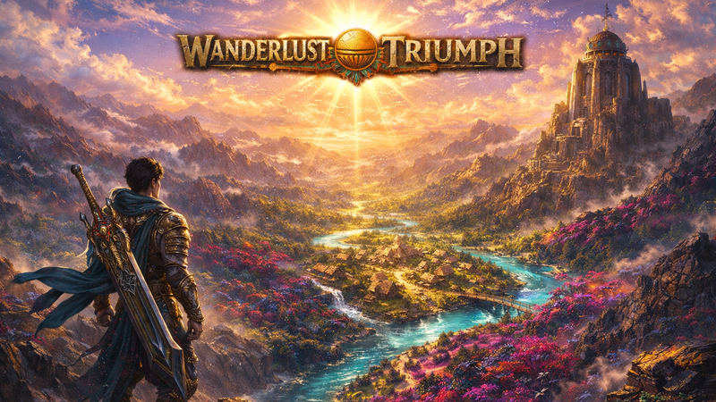
Event Capsule 800×450
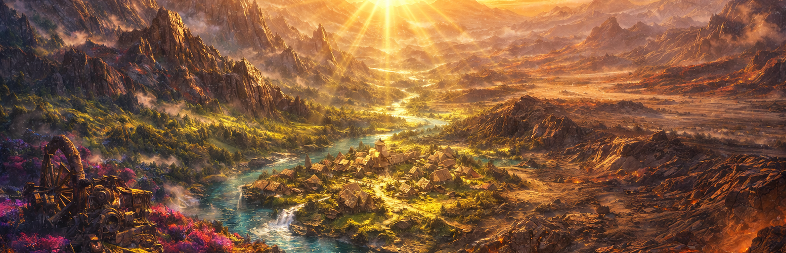
Library Hero 3840×1240 (ingrandita 2,5× dalla sorgente 1536 px)
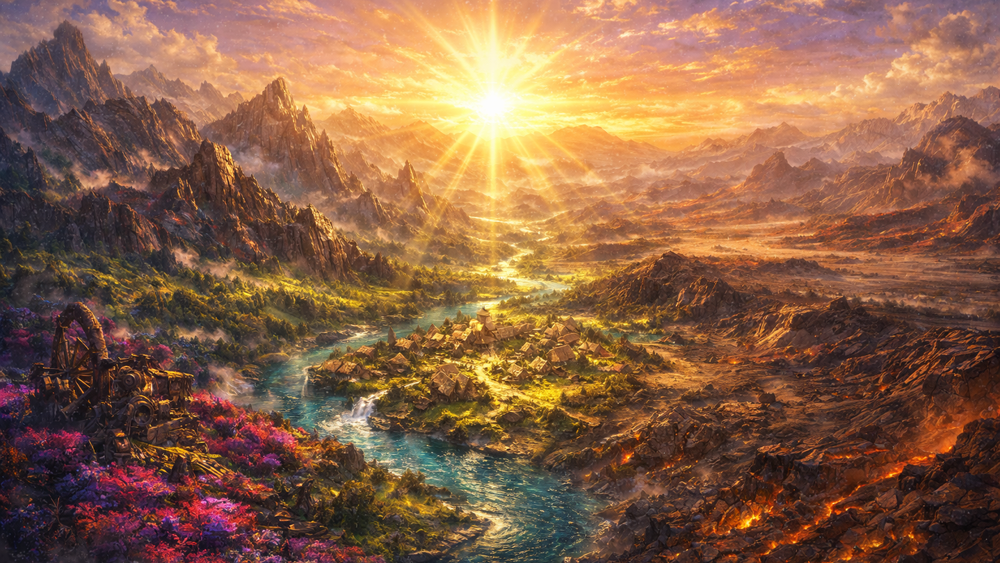
Page Background 1438×810
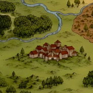
Community Icon 184×184
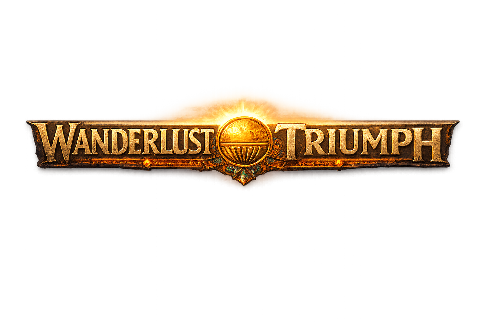
Library Logo (trasparente) — placca dorata + sole, asset authored
Hero libreria (3840×1240), page background e client icon in marketing/steam/assets/. Capsule ricavate da Downloads/Header Capsule.png (logo incorporato). Tutti gli asset sono in assets/candidates/from-keyart/.
📝 Short description — varianti (scegli una / correggi)